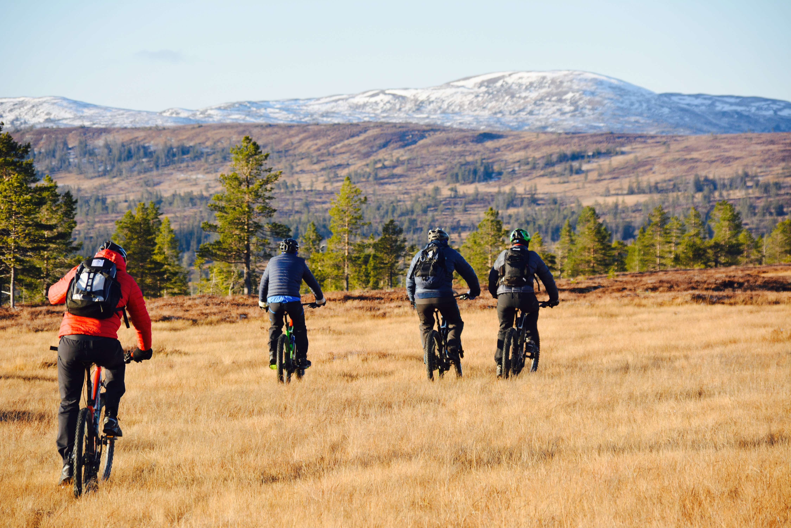

Skallstuggu er full av opplevelser! Vakre omgivelser og god tilgjengelighet gjør stedet perfekt for turer, aktiviteter og arrangementer.
Hytta ligger kun 20 minutter fra Levanger og litt over en time fra Trondheim Lufthavn.



Hårskallen og området rundt byr på fjellturer i verdensklasse med fantastisk utsikt over Trondheimsfjorden og fjellene mot øst.
Solnedgangen på Hårskallen må oppleves – og området er kjent for tørre, fine stier.
Værneområdet Øvre Forra er et unikt våtmarksområde med tilrettelagte stier, blant annet plankevei til Reinsjøen.
Du finner også flotte turer til setre som Roknesvollen og andre åpne sommerområder med gårdsdyr.
Vinterstid er området perfekt for toppturer og fjellski, mens sommeren byr på stisykling i verdensklasse.